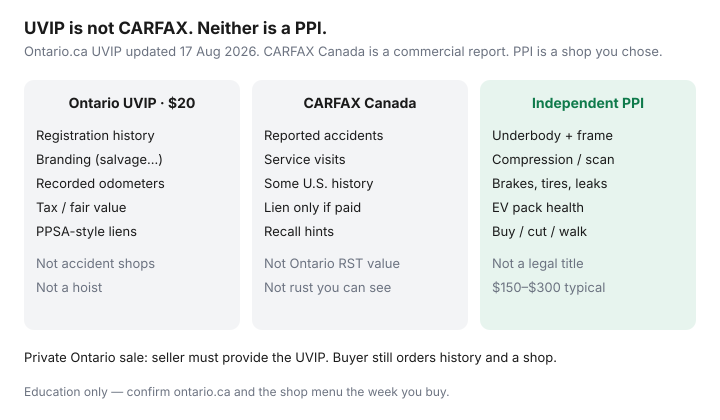

Transportation · Canada
How Ontario’s Used Vehicle Information Package (UVIP) fits your private-sale checklist
Out-of-province buyers and first-time private-sale shoppers treat Ontario’s Used Vehicle Information Package as optional paperwork. It is not. On a private Ontario sale the seller must provide a UVIP. The package is a $20 government snapshot of registration history, branding, recorded odometers, tax value, and lien information — not a CARFAX clone and not a rust inspection. Missing it is how you lose leverage, stall at ServiceOntario, or buy a branded car you did not price.
Read this beside the private-sale checklist, CARFAX Canada literacy, and an independent PPI. Dealer CPO is a different tax and warranty animal — CPO vs private.
Disclosure: Vehicle history reports as a UVIP supplement are an offer type. Saving Optimizer may earn a commission if we later add partner links. We do not currently claim CARFAX or ServiceOntario partnerships. This is not legal advice. Confirm ontario.ca the week you transfer.
Key takeaways
- Private Ontario seller must provide a UVIP (Highway Traffic Act). Fee $20 (O. Reg. 601/93, s. 5). Ontario.ca updated 17 Aug 2026; reviewed 20 Sep 2026.
- Buyers can order one online (VIN or plate + Ontario postal code) or same-day at ServiceOntario — useful if the seller “forgot.”
- Read branding, lien lines, and odometer notes before you argue about price. Ontario RST on private sales generally uses the greater of purchase price or the package’s taxable value.
- UVIP ≠ CARFAX. Use both. Then pay a shop.
- No UVIP, no deal. Do not accept a blurry photo or a package for a different VIN.
What a UVIP contains and who must provide it
Ontario.ca’s used-vehicle information package page (updated 17 Aug 2026) describes a government printout that typically includes a vehicle description, Ontario registration history, recorded odometer readings, branding (for example salvage or rebuilt), a tax value used in private-sale retail sales tax, and lien information from the searches the package is built on. The private seller is required to provide it. Registered motor vehicle dealers under OMVIC live under a different disclosure statute — do not storm a Toyota store demanding a UVIP as if it were Kijiji.
If two names are on the ownership, both generally need to be in the transfer conversation. A “cousin selling for them” with no package and no ID match is not a rural charm. It is a pause.
How to order and how fresh it must be
Order online with the VIN or plate plus an Ontario postal code, or walk into ServiceOntario for a same-day print. The buyer can buy one even when the seller should have. That is how you verify a story.
Freshness: use Ontario’s current instructions, not a Facebook rule of thumb. Practically, order in the same week as the transfer. A package from last month does not see a lien that was registered last Tuesday. If the seller already handed you a UVIP, match the VIN to the dash and check the issue date. If anything looks stale — especially after a “I paid off the loan Friday” story — buy a new one yourself.
Reading branding, liens, and odometer notes
- Branding: salvage, rebuilt, irreparable, stolen. A rebuilt car can be a fair buy at a rebuilt price with an insurer who will write it. It is a disaster at a clean-title price. Quote insurance on the VIN before you deposit.
- Liens: an open lien is not “their problem after you pay.” Discharge first, or pay the lienholder with a written payout and keep the paper. Repair-and-storage liens exist too — a shop can have a claim you did not expect.
- Odometer: compare package readings to the cluster and to any commercial history report. Jumps and gaps are PPI fuel.
- Tax value: Ontario private-sale RST is commonly 13% of the greater of what you pay or the declared/fair value on the package. A $9,000 handshake on a $14,000 UVIP value is not a $9,000 tax base. Confirm the live ServiceOntario tax page; this article will not compute your RST.

UVIP vs CARFAX—use both, not either/or
A UVIP will not list a 2022 insurer-paid bumper at a reporting shop the way a CARFAX Canada report might. A CARFAX history-only SKU will not replace the government’s lien and branding snapshot. People who pick one are shopping for comfort. Budget about $20 + ~$78 if you want both paper trails on an Ontario private sale, then $150–$300 for the hoist. That is still cheaper than one structural surprise.
Transfer steps after you accept the UVIP
Ontario’s buyer list (government page, confirm live): UVIP, signed bill of sale (the package has a section), the vehicle portion of the permit with the transfer completed, proof of insurance, your licence, then ServiceOntario. Many used transfers need a Safety Standards Certificate to plate — “no safety” in the ad is a future invoice. Insurance in force before you drive it home is the universal line. Quote the VIN first.
- VIN on dash = UVIP = permit = listing.
- Read branding, liens, odometer, tax value. Order CARFAX Canada with lien if you still want accident history.
- Independent PPI.
- Bill of sale: names, addresses, date, VIN, odometer, price, as-is if true, lien status.
- Payment (bank draft / in-branch), then tax, safety if required, insurance, plates — in the order ServiceOntario publishes.
Costs and timing so the deal does not stall
| Item | Typical cash | Who / when |
|---|---|---|
| UVIP | $20 | Seller must provide; buyer can reorder |
| CARFAX Canada + lien | About $77.95 | Buyer, after VIN match |
| Independent PPI | $150–$300 | Buyer’s shop, before payment |
| Safety certificate | Often $100–$200+ if you buy it | Where required to plate |
| Private RST | 13% of price or UVIP value | At registration — budget it |
Book ServiceOntario or use online transfer options Ontario currently offers so you are not sitting on an unplated car over a long weekend. If the seller needs the money “today at 9 p.m. in a plaza,” the stall you are avoiding is the feature, not the bug.
What to do if the seller will not provide one
Say no. You can still buy a UVIP yourself — and you should, if you are even considering the car — but a seller who will not produce a legally required package is not “bad at admin.” They are selecting buyers who skip process. If they offer a photocopy of a UVIP from a previous attempted sale, order a current one. If they are a registered dealer, switch to dealer rules and CPO vs used-lot math instead of UVIP theatre.
Buying in Ontario to plate in another province: still read the Ontario UVIP for that VIN’s Ontario chapter, then follow ICBC, SAAQ, MPI, or Alberta registry steps. Do not wave a UVIP at a Winnipeg clerk and call it done.
Sources & date stamps
- Ontario.ca, Used vehicle information package — seller duty, contents, $20 fee. Updated 17 Aug 2026. Reviewed 20 Sep 2026.
- Ontario.ca, Buy or sell a used vehicle — bill of sale, permit transfer, buyer registration list.
- O. Reg. 601/93 — UVIP definition and $20 fee.
- CARFAX Canada order page — public prices Sep 2026 (companion article).
Frequently asked questions
Who must provide an Ontario UVIP?
On a private sale, the seller is legally required under the Highway Traffic Act to provide a Used Vehicle Information Package. The fee is $20 (O. Reg. 601/93). Buyers can also order one. Registered OMVIC dealers follow a different disclosure regime — do not expect the same UVIP ritual at a dealership.
How fresh does a UVIP need to be?
Ontario’s page is the rule, not a forum post. Order close to the transfer so registration, branding, and lien lines still match reality. If the package is weeks old and the seller “just paid off the loan,” order a new one before you pay.
Is a UVIP the same as CARFAX Canada?
No. UVIP is Ontario government registration history, branding, recorded odometers, tax value, and lien information. CARFAX Canada is a commercial accident/service report. Use both. Neither is a mechanical inspection.
What if the seller will not provide a UVIP?
That is a legal problem and a walk-away flag. You can buy a UVIP yourself at ServiceOntario or online, but a seller who will not produce one is telling you how the rest of the deal will go. Do not take a photo of someone else’s package.
Does a UVIP apply if I am plating the car in Alberta?
UVIP is an Ontario used-vehicle package. If you buy in Ontario and plate elsewhere, you still want the Ontario snapshot for that VIN’s Ontario life — then follow the destination province’s transfer, tax, and lien rules. Do not treat UVIP as a national title.